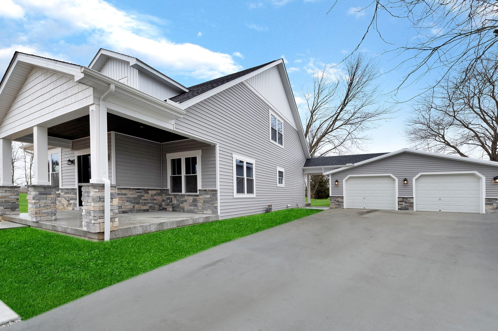

A cottage-style home with Craftsman character
This two-level home near New Alsace borrows from the Craftsman cottage: a gabled roofline, gray siding with crisp white trim, and a front porch held up by stone-based columns. It is a house that looks at home in the country, and it was designed to live well too.
The plan puts the primary suite on the main floor, with two more bedrooms and an office upstairs, for 2,007 finished square feet above grade. The basement was left unfinished. Construction took about five and a half months, and this page walks through the finished house.

A porch, a black door and a detached garage
The front porch is the first thing you notice, with stone-clad column bases and a deep roof that shades the entry. The front door is solid black with narrow glass sidelights, which gives the otherwise soft palette a graphic punch and lets light into the foyer.
A detached two-car garage sits to the side of the house, which keeps garage doors out of the front elevation and leaves the porch to take center stage.


A great room with a fireplace and built-ins
The great room is centered on a fireplace with a white shiplap chimney wall and a reclaimed-wood mantle. Built-in shelves with a wood top flank the fireplace on both sides, with a window above each, so the wall works as both a focal point and storage for books and keepsakes.
Light oak floors run through the main level, and a rough-hewn wood beam crosses the ceiling, a detail that ties the room to the rustic mantle below it. A ceiling fan keeps things comfortable.


A bright kitchen made for gathering
The kitchen opens to the great room, so the cook is never cut off from the family. White cabinets reach toward the ceiling, with a subway tile backsplash and granite-look countertops that add subtle pattern. A stainless gas range sits under a hood, with a dishwasher and a large refrigerator close by.
The island is the hub, topped with a butcher-block section that warms up all the white and lined with black metal stools for casual meals. Pendant lights above it, and a window over the sink, keep the room bright from morning to evening.


A mudroom, laundry and powder bath that work hard
Near the entry from outside, the mudroom has white shiplap walls, a row of black hooks, open cubbies and a wood bench, which gives coats and bags a home. The laundry room has its own sink, counter and cabinets, and a window with a view of the fields.
The powder bath adds some personality: a square vessel sink sits on a rustic wood vanity, which contrasts nicely with the clean white and gray used in the rest of the house.


A main-floor primary suite
Putting the primary suite on the first floor means the owners can live on one level for as long as they like. The bath has a double vanity with a granite-look top and two round mirrors, white cabinetry and a shelf of reclaimed wood. The shower is fully tiled, and a walk-in closet with wire shelving sits close by.


Upstairs: two bedrooms, an office and a full bath
A carpeted staircase leads to the second floor, where two bedrooms and an office share a full bath. The bedrooms are comfortably sized, with gray walls, ceiling fans and big windows that overlook the surrounding fields. The bath has a tub-shower finished in white subway tile with a thin band of dark blue mosaic tile along the top, a small detail that stands out.


An unfinished basement, ready when you are
Under the house, the basement is unfinished, with a polished concrete floor, exposed floor joists and plenty of height. It already works as storage space, and it can become a family room, a workshop or extra bedrooms later, without tearing out anything that was built.

Thinking about a cottage-style custom home?
This home proves you can get Craftsman character and a smart plan in about 2,000 square feet. If you are weighing something similar, we would be glad to talk through your lot, your must-haves and what a realistic budget looks like.